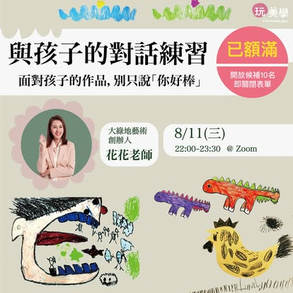
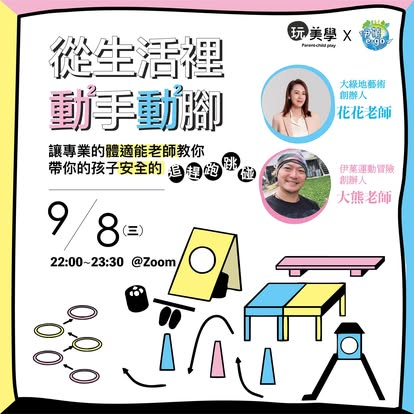
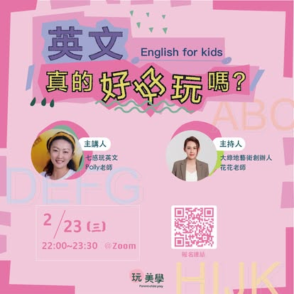
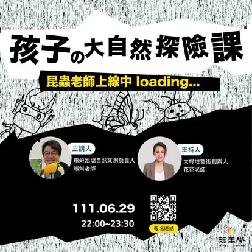

香氣與情緒
情緒支持 / 親子陪伴
Learning Talks
整合親子陪伴、兒童發展、情緒支持、健康養成與學習方法，邀請不同領域的專業者，陪家長一起理解孩子，也一起找到更有方向的教育選擇。
Talk Archive
目前先整理已提供的活動視覺；後續可補上每場講師介紹、報名連結與回顧內容。
情緒支持 / 親子陪伴

親子溝通 / 作品對話

體適能 / 安全跳躍
創造力 / 共玩練習
幼兒園生活 / 家長理解
桌遊選擇 / 親子共玩
教養溝通 / 關係修復

語言啟蒙 / 學習動機
生活空間 / 孩子發展

自然教育 / 戶外探索
中醫保健 / 養生
家長支持 / 衝突處理
情緒穩定 / 健康養成